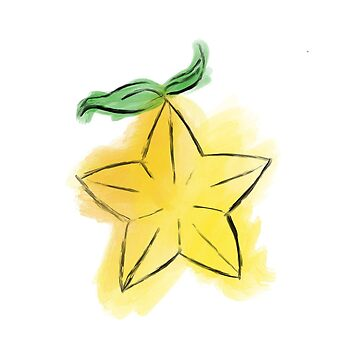
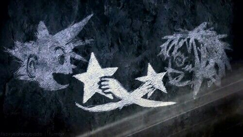

Description
A Paopu Fruit (パオプの実 Paopu No Mi) is a star-shaped fruit native to Destiny Islands. It resembles the star fruit.
Ingredients
Steps
- Share a paopu fruit with someone.
- Your destinies become intertwined.
- You'll remain a part of each other's live no matter what.

Original Recipe Source
Return to home